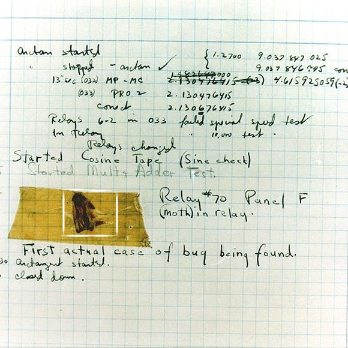

Présentation dans le cadre du colloque « Accompagner. Limites et possibles » à l’Université de Montréal, 24-26 mai.
Slides #
Texte #
Je souhaite ici vous proposer de penser avec moi la question d’une dépression dépossession de l’écriture par la machine, sans le vertige panique d’une apocalypse robot et d’un grand remplacement, de penser les liens entre humain et non-humain dans nos productions par le prisme de l’écriture, et vous soumettre un espace que je pense être un espace résident residuel d’action, d’accompagnement mais aussi de lâcher-prise, vis-à-vis d’une écriture qu’on ne saisit qu’en surface, cet espace, c’est le détournement.
Pour rendre cela plus créatif, j’ai choisi de structurer ma réflexion comme un tutoriel qui pourrait bien avoir le titre :
« Comment écrire en n’écrivant plus ? » en 4 étapes plus une, et la troisième va vous étonner. #
En amont de ce titre se trouve une référence à une formule issue notamment des milieux informatiques.
It’s not a bug, it’s an undocumented feature
Expression optimiste certes, mais qui m’intéresse pour introduire cette proposition de réflexion parce qu’elle permet de réintégrer le dysfonctionnement dans une pratique de recherche et création.
Le bug tout d’abord est un véritable insecte à l’origine : c’est-à-dire qu’il est matérialement incarné dans la machine.

Là où le bug est positif, c’est qu’il est une information, comme un bruit, c’est juste que nous ne le percevons pas directement comme signifiant.
Certes
on apprend davantage,
on vit d'autant plus vivement,
quand *ça* ne marche pas,
quand *ça* bloque,
quand *ça* accroche,
et quand *ça* trébuche, sans trop tomber,
Mais surtout, le bug entendu comme une fonctionnalité qui dysfonctionne, ici, de l’écriture et non comme un caprice de la cruelle machine, nous permet ou même nous impose un arrêt, une pause.
Comme dans l’éternel retour où Nietzsche propose d’envisager la maladie comme une occasion de saisir le moment présent. Le Bug c’est le ça qui nous remet à distance de notre outil d’écriture, qui fait une coupure, une respiration :
notre écriture numérique n'était donc pas aussi scriptée,
balisée,
pas aussi cadrée que nous le pensions,
Et peut-être est-ce encore moins le cas quand il s’agit d’environnements numériques, plus rapides, plus denses, plus partagés et réticulaires, mais également plus friables, plus susceptibles, plus caractériels en somme.
C’est par cet écueil, dans cette distance, que selon moi, et c’est le retournement que je souhaite vous proposer, se trouve une intimité, étrange et étrangère, avec notre écriture numérique.
Ma thèse serait en quelques sortes celle-ci : l’accompagnement de notre écriture numérique se fait par un jeux avec les limites, un chaos recherché et créé qui vient brouiller aussi les frontières d’humain et non-humain dans notre écriture.
Rendre aveugle #
L’écriture numérique, pour commencer, est déjà un jeu entre transparence d’apparence et opacité de la trace qui n’est qu’esthétique. On distingue plusieurs strates dans l’écriture numérique (même si c’est un peu artificiel) : code binaire de la machine, le langage d’un format, le signe à l’écran.
De la même manière qu’il faut un blanc plein de la page pour lire et faire l’inscription papier, il faut une déliaison technique pour lire l’écriture à l’écran.
Un objet ne devient visible qu’en rendant aveugle ce qui l’entoure. (Anne Marie Christin, Poétique du blanc 2000, p. 13)
À la différence que ce qui est rendu aveugle ici, dans ma page numérique, ce n’est pas tant ce qui entoure l’écriture que ce qui la constitue (ctrl+Q pour afficher le code). Tous ces constituants qui incarnent et déterminent l’écriture numérique, il nous faut les oublier pour lire et écrire.
En somme, nous parvenons à saisir l’écriture numérique comme une métaphore, une analogie. or cette image immatérielle, elle est rhétorique : elle fait écran dans les deux sens du terme à la compréhension de ce qu’est l’écriture.
Autrement dit, elle nous empêche de saisir, elle nous rend aveugle au fait que l’écriture numérique se pose comme un nouveau paradigme culturel de l’écriture.
Étape 1 : S’avouer la désécriture #
Les codes, le jeu, les règles ont changé.
Comme nous le savons tous, même si nous ne voulons pas nous l’avouer, aucun être humain n’écrit plus. (Kittler, « Le logiciel n’existe pas » [1993], in Mode protégé, trad. F. Vargoz, Dijon, Presses du réel, 2015, p. 30.)
Provocation, la formule de Kittler, médiologue allemand, proclame déjà en 1993 une écriture qui n’est plus, pas qui est différente, mais qui n’est plus aux mains de l’humain. Kittler a travaillé à comprendre les implications culturelles des médias, en se consacrant notamment aux développements techniques concernant la rédaction et l’enregistrement des arts. Ce qui se passe pour Kittler entre 1800 et 1900 pour la culture occidentale, c’est un changement culturel radical qui touche toutes les strates de la société, autant les objets que les représentations. Ce à quoi Kittler fait référence dans le contexte ici, c’est aux programmes informatiques, donc la couche aveugle ou aveuglée de nos écrits, la part logicielle de nos écritures. Cette part logicielle fait de notre écriture humaine une inscription électrique gravée dans les métaux des ordinateurs, soit un différentiel électrique, une combinaison machinique.
La rupture radicale que cela implique pour Kittler peut justement se comprendre en terme d’intimité et d’humanité. Les médias techniques à partir du XIX^e^ siècle captent le réel dans ce qui nous échappe de ce dernier, les médias d’enregistrement saisissent des données qui font défaut à la perception humaine :
- le gramophone enregistre des oscillations non perceptibles à l’oreille nue
- la machine à écrire augmente la vitesse d’écriture, elle écrit plus vite que n’importe quelle main
- les circuits intégrés de l’ordinateur traitent des données plus rapidemment que n’importe lequel ou laquelle des calculatrices humaines (femmes travaillant entre 1930 et 1950 à produire de hauts calculs).
Nous ne captons plus notre écriture, intellectuellement ou sensoriellement. C’est une dépossession de l’écriture qui ouvre à un nouveau mode ou système d’inscription : que j’appellerai, dans ma lecture de Kittler, la désécriture.
Ce que dit Kittler peut sembler être une condamnation de l’humanité, un peu rapide et un peu grinçante puisqu’il le dit en plus par écrit, mais si l’on met de côté l’angoisse littéraire que cela peut éveiller, cela a surtout le mérite de rappeler que toute culture détermine sa pérennité par ses modes de production et de diffusion et s’incarne concrètement dans un contexte qui est technologique.
Les changements d’ordres du discours sont médiatiques, ils sont donc matériels. Ce que pose Kittler c’est donc un constat, dérangeant certes, mais qui est nécessaire pour comprendre le nouveau paradigme de l’écriture avec l’écriture numérique.
S’avouer la désécriture c’est déjà la première étape du tutoriel vers une compréhension, au sens de prendre avec soi, mais cela implique de changer de question, de changer de perspective sur l’humain et le non-humain.
Étape 2 : Changer la focale #
Ce changement de perspective, la meilleure image pour l’expliquer c’est l’expérience de pensée proposée par Turing dans son article Computing Machinery and Intelligence. L’article débute avec la question « Can computers think? » et pour y répondre Turing va proposer une expérience de pensée :
Le jeu de l’imitation tel qu’on se le rappelle est simple :
- trois joueurs : un humain, une machine, un interrogateur, chacun dans une pièce indépendante
- en échangeant seulement des messages écrits, l’interrogateur en posant des questions doit déterminer qui est humain et qui est machine.
L’hypothèse de Turing est qu’il y a toujours la possibilité pour la machine de tromper l’interrogateur ou plutôt pour l’interrogateur d’être trompé par la machine.
Ce qui m’intéresse dans la configuration du jeu de l’immitation c’est que :
- l’humanité se détermine par l’écriture : le test d’humanité c’est de l’écriture
- elle se conclue sur le bénéfice du doute qui permet de refuser l’hypothèse flatteuse d’une supériorité humaine ou de l’intelligence humaine sur la machine et qui donc permet d’évacuer la valeur d’une distinction humain et non-humain.
Bien que Turing annonce dans son article une problématique qui nous intéresse toujours aujourd’hui (notamment avec ChatGPT), il l’évacue très clairement :
The original question, “Can machines think?” I believe to be too meaningless to deserve discussion. (Alan Turing, Computing Machinery and Intelligence, 1950)
Si imitation possible il y a entre la machine, le non-humain et l’humain, ce n’est pas parce que la machine est super-puissante et diabolique, c’est parce que nos catégories (humain/non-humain) ne tiennent pas, elles ne fonctionnent pas. Elles se justifient par une posture d’orgueil, donc se poser la question : « Can computer or ChatGPT think? » n’est pas la bonne question pour comprendre ce qui se joue dans l’écriture machine1.
Ce qui est plus intéressant c’est de comprendre quelle est l’idée d’intelligence, d’écriture a été implémentée dans la machine. C’était donc la seconde étape du tutoriel : Changer de perspective, de focale - laisser le bénéfice d’un intelligence à la machine et accepter la possibilité qu’il y a de l’intelligence sous d’autres formes (Turing annonce déjà en 1950 l’intelligence artificielle) mais aussi d’autres formes d’écriture.
Étape 3 : Écouter le bruit #
Ce qui me semble émerger, résonner dans l’apocalypse de l’écriture de Kittler comme dans la réflexion de Turing, c’est l’idée que, si l’on demeure dans le mode de l’écriture comme exclusivement humaine, les autres formes d’écriture deviennent alors des formes de désécriture.
Le problème émerge pour Kittler d’un a-priori propres aux science humaine, qu’il veut d’ailleurs exorciser : ce n’est pas le modèle technique de l’écriture numérique qui accroche mais le fait que ce modèle ne correspond pas à la catégorie de l’écriture même s’il parvient à l’imiter et donc à nous tromper.
Il y a désormais, de la machine, du non-humain dans ce que l’on considère comme notre écriture et cela cause du bruit dans la définition. Cette notion de bruit elle est d’autant plus importante qu’à partir des médias nés au tournant du XIX^e^ siècle, il n’y a plus de hiérarchisation de l’information :
- le gramophone enregistre tout, même ce qui ne fait pas sens
Le gramophone enregistre le bruit du monde, c’est-à-dire le réel ou au-delà du signifié – qui se révèle de la même manière dans la cure de la psychanalyse. (Kittler, Gramophone, Film, Typewriter, 1999)
- l’ordinateur enregistre nos déplacements de curseur jusqu’à nos courriels notés urgent envoyés à l’administration
Le bruit c’est le témoin d’un réel technique de l’écriture et Kittler le comprend comme un processus de chiffrement et de déchiffrement qui cristalise davantage de sens : ce que je ne vois pas, ce que j’oublie dans mon écriture numérique, ce qui est rendu aveugle, c’est ce qui détermine mon écriture. Donc pour comprendre mon écriture, je dois écouter le bruit de sa désécriture.
Puisque désormais on a laissé poliment le bénéfice du doute à la machine, que l’on convenu de porosités entre humain et non-humain et que l’on a mis de côté la question de savoir qui fait mieux que qui, maintenant la troisième étape du tutoriel est d’écouter le bruit
Il y a un exemple fascinant qui lie l’écriture au bruit par la machine, c’est un exemple cité par Kittler : il s’agit d’une anecdote racontée par Salomo Friedländer dans la nouvelle « Goethe parle au phonographe » qui est datée de 1916.
C’est l’histoire d’une femme, Anna Pomke dont le rêve est d’entendre la voix de Goethe hors de ses lectures. Anna est une lectrice issue du système de lecture du début du XIX^e^, système où la lecture est un dispositif hallucinatoire qui fait entendre la voix de l’auteur entre les lignes, mais Anna elle souhaite entendre la voix de son maître hors de la page. Il se trouve que l’amant désespéré d’Anna, nommé Pschorr est ingénieur et pour la séduire, ce dernier va tenter de ressuciter la voix de Goethe.
Comme dans le cas de l’Ève future de Villiers de L’Isle Adam où un lord aussi désespéré va demander à un Edison fictif de lui créer la version de la femme qu’il aime, qui est belle mais qu’est qu’elle est sotte, de la recréer sous la forme de machine, il y a une description détaillé d’un rêve technique.
Le commun entre les deux récits ce n’est pas seulement la morale que l’innovation technique est motivée par le désespoir des hommes, mais surtout les descriptions très détaillées du processus technique, pour Goethe parle au phonogramme, je vous ai résumé la procédure ainsi :
Après fabrication d’un faux larynx à partir du moulage du squelette d’un Goethe fraîchement extrait du caveau, l’ingénieur connecte le larynx à un microphone, un gramophone et un soufflet afin d’aspirer les ondes du grand homme.
La réalité dans cette expérimentation c’est que Goethe, la voix de l’auteur, est devenu le bruit blanc d’un média, il grésille, il siffle, il grince, il ronfle.
(spoiler : Anna est hypnotisée par la voix de Goethe qui parle au phonographe au point d'en oublier son amant, et horrifié et vexé, l'ingénieur va détruire sa création sous les roues d'une autre machine de la modernité, le train, et c'est par ce geste qu'il met fin à une lecture hallucinatoire tout en prédisant le rapt de l'attention, l'hypnose que vont causer les nouveaux médias)
Cette fiction, elle déborde sur le réel, puisque un siècle après, en 2015, trois personnes (Flavia Montaggio, Patricia Montaggio et Imp Kerr) ont eu pour projet de reconstituer la voix de Nietzsche à partir de son génotype, d’un syntétiseur vocal (Text-To-Speech) et d’une reconstitution par imprimante 3D de sa trachée et de son larynx. Même cuisine donc, Nietzsche ne crache pas mais il reste le bruit d’un média.
Dans les deux cas, nous sommes face à une écriture devenue le bruit de la matérialité d’une machine, composition machinique qui n’est pas tant une recomposition, qu’une recherche de l’étrangeté.
Le passage de la défamiliarisation #
L’écoute du bruit, l’observation du bug aussi je pense, ce sont des expériences qui provoquent une défamiliarisation ou étrangisation selon la pensée de Chlovski.
Lire en narrateur un cheval, comme dans la nouvelle de Tolstoï, faire parler Goethe dans le phonographe, accepter une désécriture, c’est ce qui décentre, ce qui extrait un objet, un principe d’un automatisme et d’une certitude. C’est extraire d’une idée d’acquis aussi.
Qu’en est-il alors de notre tutoriel ?
Étape 4 : La maîtrise #
La défamiliarisation c’est bien, le cheval de Tolstoï il parle super bien mais cela n’enlève pas l’étrangeté qui me coupe de mon écriture.
Pour comprendre, accompagner, prendre avec soi, l’écriture et nos objets culturels, Kittler est sur ce point radical, pour recouvrer un rapport d’écriture face à la machine, 4eme étape, il faut maîtriser les langages de programmation.
[J]e ne peux pas comprendre que les gens n’apprennent à lire et à écrire que les 26 lettres de l’alphabet. Ils devraient au moins y ajouter les 10 chiffres, les intégrales et les sinus […]. Ils devraient de plus maîtriser deux langages de programmation, afin de disposer de ce qui, en ce moment, constitue la culture. (Kittler, interview)
Ce serait selon moi bien trop moralisateur et autoritaire de finir sur cette solution que pour lutter contre une dépossession, il faut aller vers une maîtrise. Je peux être radicale sur certaine choses mais ça ne nous permettra pas plus d’écrire que de devenir des programmeurs.
Donc je propose une autre fin qui vient aussi hacker, gêner, perturber le tuto kittlérien.
Étape 4+1 : Le détournement #
Plutôt que de lire les manuels des langages de programmation, je propose de bidouiller, tester, explorer, rater beaucoup, parvenir peut-être à quelque chose, soit détourner un rapport à la machine.
Le détournement implique moins une connaissance experte qu’un tatônnement un peu insolent, en mettant de côté une certaine sacralité de l’écriture, un mythe du génie inspiré, c’est aller perturber une matière, faire une écriture comme pour Michaux au contact du support. Michaux n’a jamais codé ou fait de l’écriture machine mais l’idée commune est je pense de ne plus penser en terme de catégories, d’aller chercher ou retrouver un geste. La tension dans le détournement, c’est l’idée de faire dans un espace bien défini, cadré par un but ou des pratiques, de faire ce qui n’est pas prévu, et donc d’aller tester l’outil ou l’environnement dans ce qu’il peut supporter, et potentiellement “casser”, faire dysfonctionner.
Ce qui fait écho à Shimamoto, qui dans sa théorie du curse of the brush (1957) dit ceci :
PainPaint cannot be liberated until the brush has been broken up and thrown away and distance has been gained from it. Paint does not start to live until it is liberated from the brush.
Si on transcrit cette malédiction du pinceau à l’écriture numérique, l’écriture se libère, émerge de la désécriture peut-être lorsque la machine se brise, lorsqu’elle est atteinte dans sa limite.
Le détournement c’est donc potentiellement, et c’est ainsi que j’arrive à clore mon tutoriel, une recherche du bug, c’est vouloir se faire le papillon de nuit (ou le cafard), chercher et créer ce qui résiste.
Bien entendu en bidouillant, en quêtant le bug, on n’écrit plus ou moins au sens classique de produire des signes, des phrases, des oeuvres. On ne fonctionne plus en tant que littéraire mais on est libre d’une certaine désécriture parce que l’on est en train d’observer comment elle se noue et on est en train d’essayer de savoir comment participer à son bruit.
Donc, selon mes calculs un peu flous fous, dans l’écriture numérique,
C’est en n’écrivant plus, que l’on écrit. #
-
Pour avoir tenter le jeu de l’imitation avec ChatGPT, c’est un échec. ↩︎